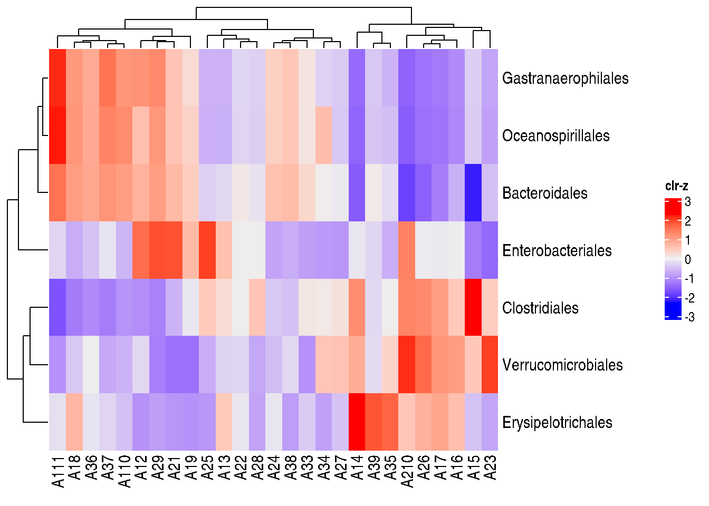

# load dataset and store it into tse
data("Tengeler2020", package = "mia")
tse <- Tengeler2020Community Composition
Overview
The following packages are needed to succesfully run the examples in this notebook:
mia: tools for microbiome data analysis
ComplexHeatmap: plotting heatmaps
To begin with, we import Tengeler2020 from the mia package and store it into a variable.
Assay transformation and agglomeration
First of all, we transform the counts assay to relative abundances and store the new assay back in the TreeSE.
tse <- transformAssay(tse,
method = "relabundance")Relative abundances are useful because they are not affected by compositionality, which is present in the counts assay due to sequencing bias (the unequal amplification of DNA from two different samples due to random effects).
| ADHD | Control | |
|---|---|---|
| Bacteroidetes | 69.2 | 61.1 |
| Firmicutes | 23.7 | 30.1 |
| Verrucomicrobia | 4.7 | 6.9 |
| Proteobacteria | 2.4 | 1.8 |
Next, we agglomerate the experiment to the Order level, so that information is more condensed and therefore easier to visualise and interpret.
tse_order <- agglomerateByRank(tse, rank = "Order")Compositional heatmap
We then perform a CLR transformation sample-wise and a Z transformation feature-wise. The former creates a more homogeneous (logarithmic) scale for the usually very skewed microbiome data, whereas the latter normalises the features across samples for better comparisons between samples.
# transform relative abundance to clr
tse_order <- transformAssay(tse_order,
assay.type = "relabundance",
method = "clr",
pseudocount = 1,
MARGIN = "samples")
# transform clr to z
tse_order <- transformAssay(tse_order,
assay.type = "clr",
method = "z",
name = "clr_z",
MARGIN = "features")Finally, we plot the compositional heatmap with the ComplexHeatmap package and illustrate it in Figure 1.
Heatmap(assay(tse_order, "clr_z"),
name = "clr-z")